CRVI001230Mati Klarwein - Self-portrait after Dürer
Painting · plate P01-50s-self-durer on the artist's own site · 1950s
Painting · plate P01-50s-self-durer on the artist's own site · 1950s

CRVI001220Mati Klarwein - Untitled
Painting · plate P22-vol2-96 on the artist's own site
Painting · plate P22-vol2-96 on the artist's own site

CRVI001201Osibisa - Heads
Painting by Mati Klarwein · Decca · 1972
Painting by Mati Klarwein · Decca · 1972

CRVI001241Mati Klarwein - Godmother
Painting · plate V25-Godmother on the artist's own site
Painting · plate V25-Godmother on the artist's own site

CRVI001199The Last Poets - This Is Madness
Painting by Mati Klarwein · Douglas 7 · 1971
Painting by Mati Klarwein · Douglas 7 · 1971

CRVI001187Mati Klarwein - The Last Poets, This Is Madness — back cover painting
Painting · 1971
Painting · 1971
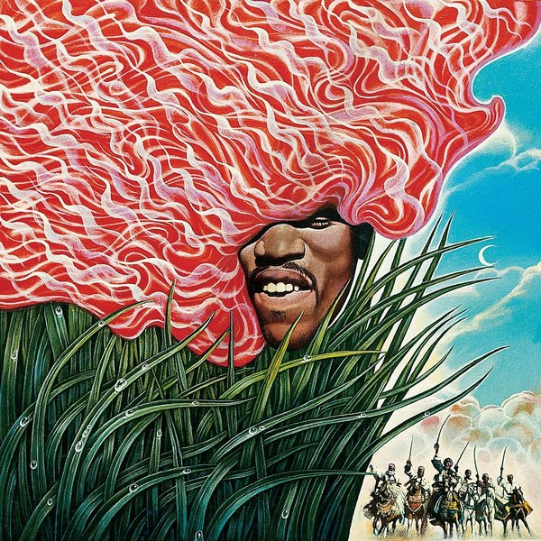
CRVI001192Mati Klarwein - Jimi Hendrix
Painting
Painting
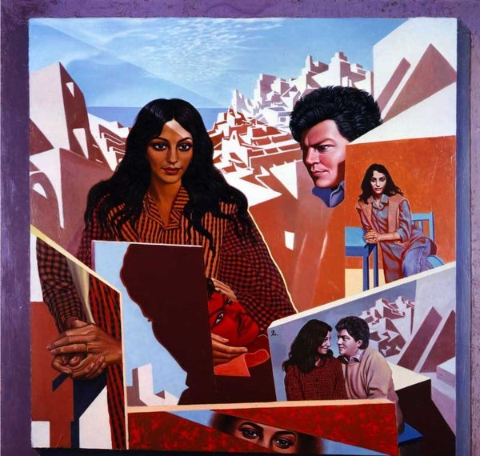
CRVI001222Mati Klarwein - Untitled
Painting · plate P16-vol2-87 on the artist's own site
Painting · plate P16-vol2-87 on the artist's own site
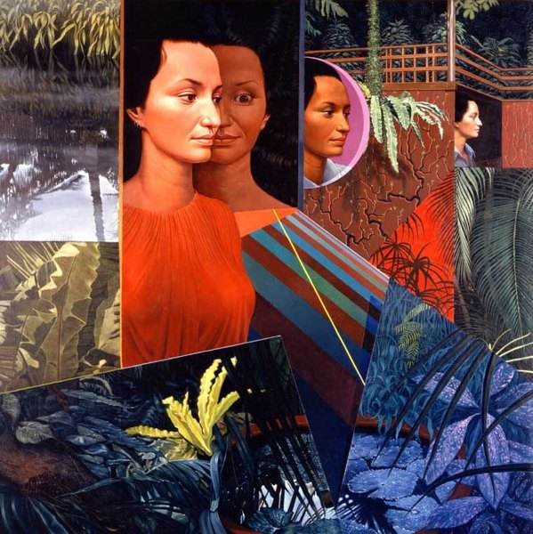
CRVI001223Mati Klarwein - Untitled
Painting · plate P17-vol2-87 on the artist's own site
Painting · plate P17-vol2-87 on the artist's own site

CRVI001245Mati Klarwein - Clone (unfinished)
Painting · plate V32-clone-unfinished on the artist's own site
Painting · plate V32-clone-unfinished on the artist's own site

CRVI001249Mati Klarwein - Nativity
Painting · plate V03-Nativity on the artist's own site
Painting · plate V03-Nativity on the artist's own site

CRVI001195Mati Klarwein - Bitches Brew
Painting · the whole gatefold work · 1969
Painting · the whole gatefold work · 1969

CRVI001142Jackie McLean - Demon's Dance
Designed by Bob Venosa, artwork by Mati Klarwein · Blue Note BST 84345 · 1970
Designed by Bob Venosa, artwork by Mati Klarwein · Blue Note BST 84345 · 1970

CRVI001228Mati Klarwein - Untitled
Painting · plate P15-vol2-82 on the artist's own site
Painting · plate P15-vol2-82 on the artist's own site

CRVI001231Mati Klarwein - Untitled
Painting · plate P14-vol2-77 on the artist's own site
Painting · plate P14-vol2-77 on the artist's own site

CRVI001189Mati Klarwein - Soundscape
Painting
Painting

CRVI001233Mati Klarwein - Annunciation
Painting · plate V02-Annunciation4 on the artist's own site
Painting · plate V02-Annunciation4 on the artist's own site

CRVI001203Mati Klarwein - Untitled
Painting · plate R14-vol3-43 on the artist's own site
Painting · plate R14-vol3-43 on the artist's own site

CRVI001232Mati Klarwein - Crucifixion
Painting · plate V12-Crucifixion on the artist's own site
Painting · plate V12-Crucifixion on the artist's own site

CRVI001246Mati Klarwein - Sun & Moon
Painting · plate V18-Sun-Moon on the artist's own site
Painting · plate V18-Sun-Moon on the artist's own site

CRVI001243Mati Klarwein - Angel, Brazilian
Painting · plate V10-Angel-Brazilian on the artist's own site
Painting · plate V10-Angel-Brazilian on the artist's own site

CRVI001191Mati Klarwein - Blessing
Painting · plate V15-Blessing(HIGH_RES) on the artist's own site
Painting · plate V15-Blessing(HIGH_RES) on the artist's own site

CRVI001247Mati Klarwein - Timeless
Painting · plate V14-Timeless on the artist's own site
Painting · plate V14-Timeless on the artist's own site

CRVI001237Mati Klarwein - St John
Painting · plate V05-St-John-3 on the artist's own site
Painting · plate V05-St-John-3 on the artist's own site

CRVI001196Mati Klarwein - Time
Painting
Painting

CRVI001235Mati Klarwein - Conceptual Tree
Painting · plate V19-Conceptual-Tree on the artist's own site
Painting · plate V19-Conceptual-Tree on the artist's own site

CRVI001251Howard Wales & Jerry Garcia - Hooteroll?
Painting by Mati Klarwein · Douglas KZ 30859 · 1971
Painting by Mati Klarwein · Douglas KZ 30859 · 1971
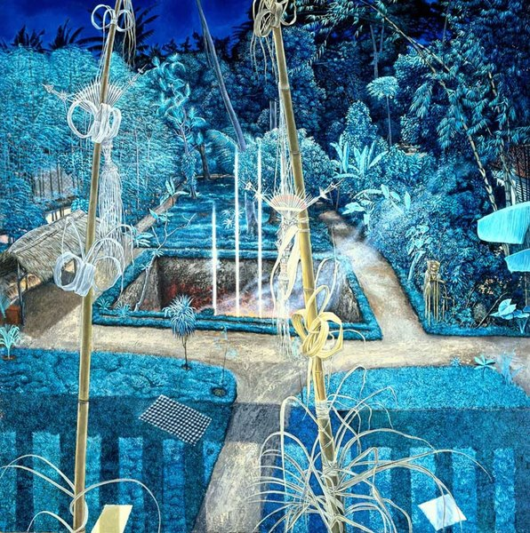
CRVI001197Mati Klarwein - Alexander's Dream
Painting
Painting
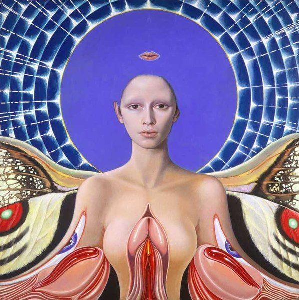
CRVI001236Mati Klarwein - Bavarian Angel
Painting · plate V11-Bavarian-Angel on the artist's own site
Painting · plate V11-Bavarian-Angel on the artist's own site

CRVI001188Eric Dolphy - Iron Man
Painting by Mati Klarwein, photograph by Don Schlitten · Douglas KZ 30873 · 1971
Painting by Mati Klarwein, photograph by Don Schlitten · Douglas KZ 30873 · 1971

CRVI001239Mati Klarwein - Live
Painting · plate V23-Live on the artist's own site
Painting · plate V23-Live on the artist's own site

CRVI001204Mati Klarwein - La Profeta
Painting · plate R17-vol3-59 on the artist's own site
Painting · plate R17-vol3-59 on the artist's own site

CRVI001198Mati Klarwein - You're Next
Painting
Painting

CRVI001252Joe Beck - Beck
Designed by Bob Ciano, painting by Mati Klarwein · Kudu KU-21 S1 · 1975
Designed by Bob Ciano, painting by Mati Klarwein · Kudu KU-21 S1 · 1975

CRVI001242Mati Klarwein - Evil
Painting · plate V24-Evil on the artist's own site
Painting · plate V24-Evil on the artist's own site
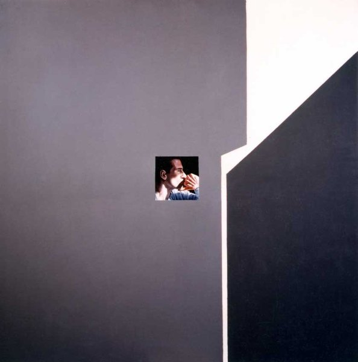
CRVI001219Mati Klarwein - Untitled
Painting · plate P21-vol2-94 on the artist's own site
Painting · plate P21-vol2-94 on the artist's own site

CRVI001248Mati Klarwein - Untitled
Painting · plate R02-vol3-15 on the artist's own site · 1983
Painting · plate R02-vol3-15 on the artist's own site · 1983
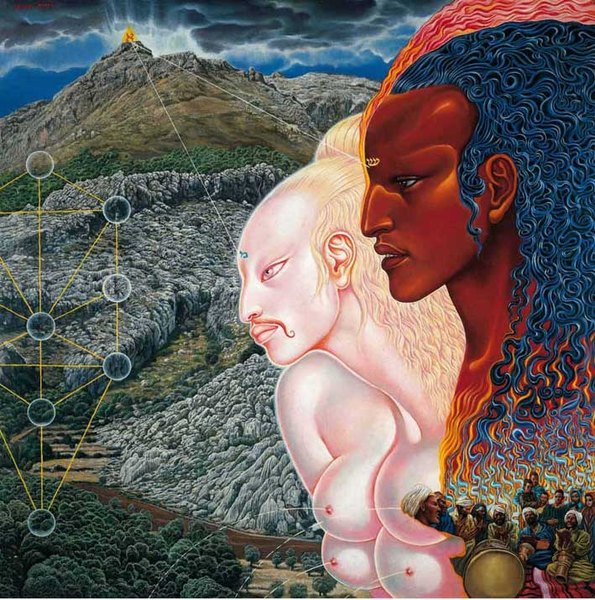
CRVI001238Mati Klarwein - Moses
Painting · plate V22-Moses on the artist's own site
Painting · plate V22-Moses on the artist's own site

CRVI001226Mati Klarwein - Untitled
Painting · plate P26-vol2-152 on the artist's own site
Painting · plate P26-vol2-152 on the artist's own site

CRVI001250Mati Klarwein - Landscape Described
Painting · plate landscape-described-1963 on the artist's own site · 1963
Painting · plate landscape-described-1963 on the artist's own site · 1963

CRVI001193Mati Klarwein - Untitled
Painting
Painting

CRVI001200The Last Poets - Holy Terror
Painting by Mati Klarwein · Rykodisc RCD 10319 · 1993
Painting by Mati Klarwein · Rykodisc RCD 10319 · 1993

CRVI001186Aïyb Dieng - Rhythmagick
Designed by Aldo Sampieri, painting by Mati Klarwein, photograph by Thi-Linh Le · Subharmonic SD7021-2 · 1997
Designed by Aldo Sampieri, painting by Mati Klarwein, photograph by Thi-Linh Le · Subharmonic SD7021-2 · 1997

CRVI001190Mati Klarwein - Camouflage
Painting · 1985–1987
Painting · 1985–1987

CRVI001202Mati Klarwein - Untitled
Painting · plate R16-vol3-56 on the artist's own site
Painting · plate R16-vol3-56 on the artist's own site

CRVI001225Mati Klarwein - Untitled
Painting · plate P24-vol2-134 on the artist's own site
Painting · plate P24-vol2-134 on the artist's own site

CRVI001214Mati Klarwein - Last Sunset
Painting · plate L24-last-sunset on the artist's own site
Painting · plate L24-last-sunset on the artist's own site

CRVI001240Mati Klarwein - Daily Miracle
Painting · plate v30-Daily-Miracle on the artist's own site
Painting · plate v30-Daily-Miracle on the artist's own site

CRVI001234Mati Klarwein - Virgin Mary
Painting · plate V20-Virgin-Mary on the artist's own site
Painting · plate V20-Virgin-Mary on the artist's own site

CRVI001221Mati Klarwein - Untitled
Painting · plate P19-vol2-90 on the artist's own site
Painting · plate P19-vol2-90 on the artist's own site
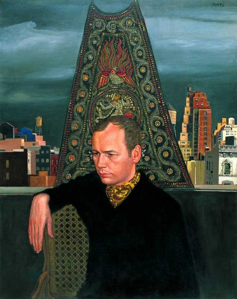
CRVI001224Mati Klarwein - Untitled
Painting · plate P06B-vol2-51 on the artist's own site
Painting · plate P06B-vol2-51 on the artist's own site
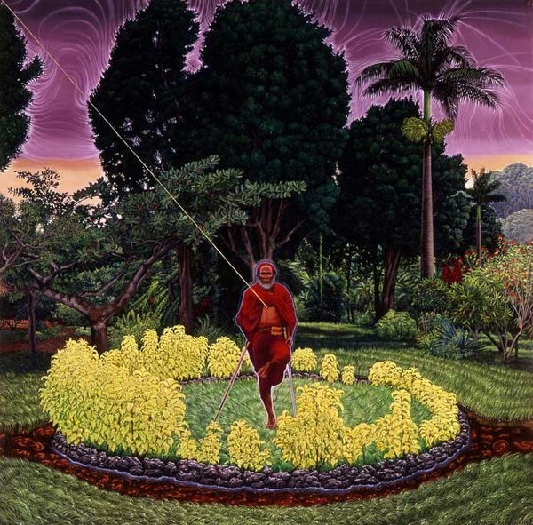
CRVI001244Mati Klarwein - Grandfather
Painting · plate V27-Grandfather on the artist's own site
Painting · plate V27-Grandfather on the artist's own site

CRVI001253Philippe Entremont, Leonard Bernstein, New York Philharmonic - Bernstein: The Age of Anxiety
Painting by Mati Klarwein · Columbia Masterworks MS 6885 · 1966
Painting by Mati Klarwein · Columbia Masterworks MS 6885 · 1966
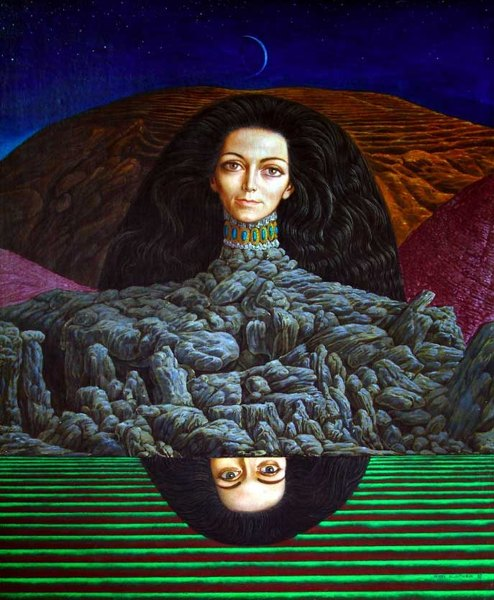
CRVI001227Mati Klarwein - Untitled
Painting · plate P12-vol2-69 on the artist's own site
Painting · plate P12-vol2-69 on the artist's own site

CRVI001218Mati Klarwein - Untitled
Painting · plate P18-vol2-88 on the artist's own site
Painting · plate P18-vol2-88 on the artist's own site
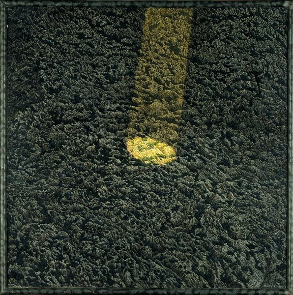
CRVI001213Mati Klarwein - Real Estate
Painting · plate real estate on the artist's own site
Painting · plate real estate on the artist's own site

CRVI001194Mati Klarwein - Angel, New York
Painting · plate V09-Angel-New-York on the artist's own site
Painting · plate V09-Angel-New-York on the artist's own site

CRVI001217Mati Klarwein - Untitled
Painting · plate P11-vol2-68 on the artist's own site
Painting · plate P11-vol2-68 on the artist's own site